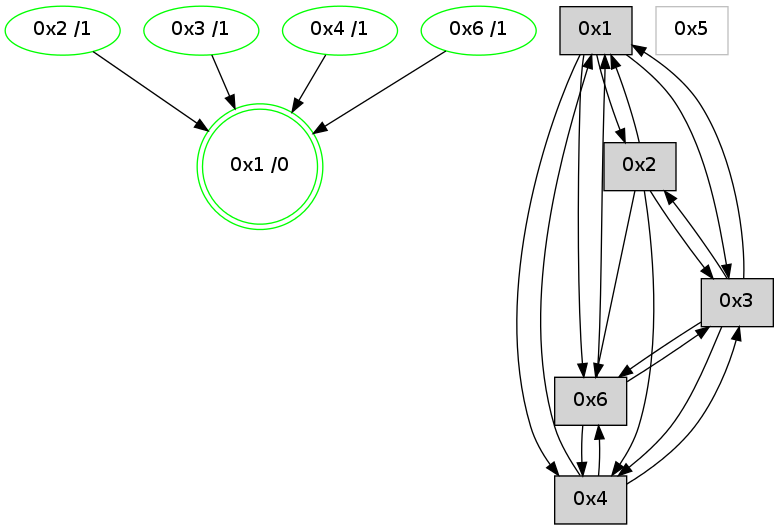

>> << IDX [start] -100 -25 -5 +0 +5 [1245.46709418]
 Previous packets
----------------------------------------------------------------------
1240.444566 beacon01(adaf) #0 coord=01,02,05,03,04,06 cycle=944.0ms assoc
-- color-indic=0 64 0d 00
1240.454528 beacon02(adaf) #0 coord=01,02,05,03,04,06 cycle=944.0ms assoc 64 5c ff
1240.464527 beacon05(adaf) #0 coord=01,02,05,03,04,06 cycle=944.0ms assoc 64 fa d5
1240.474528 beacon03(adaf) #0 coord=01,02,05,03,04,06 cycle=944.0ms assoc 64 66 f1
1240.484529 beacon04(adaf) #0 coord=01,02,05,03,04,06 cycle=944.0ms assoc 64 c0 db
1240.494528 beacon06(adaf) #0 coord=01,02,05,03,04,06 cycle=944.0ms assoc 64 b4 c7
1240.506239 [Hello(4): seq=990 sym=1,3,6 sysInfo=hasWarning stat=1:1,11,5,0/3:1,0,9,1/6:14,0,6,1]
1240.511896 [Hello(1): seq=895 sym=2,4,6,3 color=0 sysInfo=hasWarning,MaxColorIndicationCalled,MaxColorResponseCalled,MaxColorRequestCalled,ColoringModeRequestCalled stat=2:0,3,11,0/4:8,0,5,1/6:11,2,15,1/3:5,0,6,1]
----------------------------------------------------------------------
1241.449071 beacon01(adaf) #0 coord=01,02,05,03,04,06 cycle=944.0ms assoc
-- color-indic=0 64 c9 6f
1241.459033 beacon02(adaf) #0 coord=01,02,05,03,04,06 cycle=944.0ms assoc 64 98 90
1241.469031 beacon05(adaf) #0 coord=01,02,05,03,04,06 cycle=944.0ms assoc 64 3e ba
1241.479033 beacon03(adaf) #0 coord=01,02,05,03,04,06 cycle=944.0ms assoc 64 a2 9e
1241.489033 beacon04(adaf) #0 coord=01,02,05,03,04,06 cycle=944.0ms assoc 64 04 b4
1241.499033 beacon06(adaf) #0 coord=01,02,05,03,04,06 cycle=944.0ms assoc 64 70 a8
1241.510762 [Hello(6): seq=908 sym=4,3,1 asym=2 color=3 sysInfo=hasWarning,MaxColorIndicationCalled,ColoringModeIndicationCalled,MaxColorResponseCalled stat=4:0,0,0,0/3:9,0,5,1/1:2,13,14,0/2:3,0,3,1]
----------------------------------------------------------------------
1242.453576 beacon01(adaf) #0 coord=01,02,05,03,04,06 cycle=944.0ms assoc
-- color-indic=0 64 97 0e
1242.463537 beacon02(adaf) #0 coord=01,02,05,03,04,06 cycle=944.0ms assoc 64 c6 f1
1242.473540 beacon05(adaf) #0 coord=01,02,05,03,04,06 cycle=944.0ms assoc 64 60 db
1242.483538 beacon03(adaf) #0 coord=01,02,05,03,04,06 cycle=944.0ms assoc 64 fc ff
1242.493538 beacon04(adaf) #0 coord=01,02,05,03,04,06 cycle=944.0ms assoc 64 5a d5
1242.503538 beacon06(adaf) #0 coord=01,02,05,03,04,06 cycle=944.0ms assoc 64 2e c9
1242.515240 [Hello(4): seq=991 sym=1,3,6 sysInfo=hasWarning stat=1:2,11,5,0/3:1,0,9,1/6:15,0,6,1]
1242.520576 [Hello(1): seq=896 sym=2,4,6,3 color=0 sysInfo=hasWarning,MaxColorIndicationCalled,MaxColorResponseCalled,MaxColorRequestCalled,ColoringModeRequestCalled stat=2:0,3,11,0/4:8,0,5,1/6:12,2,15,1/3:5,0,6,1]
----------------------------------------------------------------------
1243.458082 beacon01(adaf) #0 coord=01,02,05,03,04,06 cycle=944.0ms assoc
-- color-indic=0 64 53 61
1243.468044 beacon02(adaf) #0 coord=01,02,05,03,04,06 cycle=944.0ms assoc 64 02 9e
1243.478043 beacon05(adaf) #0 coord=01,02,05,03,04,06 cycle=944.0ms assoc 64 a4 b4
1243.488044 beacon03(adaf) #0 coord=01,02,05,03,04,06 cycle=944.0ms assoc 64 38 90
1243.498043 beacon04(adaf) #0 coord=01,02,05,03,04,06 cycle=944.0ms assoc 64 9e ba
1243.508044 beacon06(adaf) #0 coord=01,02,05,03,04,06 cycle=944.0ms assoc 64 ea a6
1243.519064 [STC(1) #0.223 new-neigh,tree-change,inconsistent-stability,stable,to-color d=0]
1243.523390 [Hello(6): seq=909 sym=4,3,1 color=3 sysInfo=hasWarning,MaxColorIndicationCalled,ColoringModeIndicationCalled,MaxColorResponseCalled stat=4:0,0,0,0/3:10,0,5,1/1:3,13,14,0]
----------------------------------------------------------------------
1244.462587 beacon01(adaf) #0 coord=01,02,05,03,04,06 cycle=944.0ms assoc
-- color-indic=0 64 1f d1
1244.472547 beacon02(adaf) #0 coord=01,02,05,03,04,06 cycle=944.0ms assoc 64 4e 2e
1244.482549 beacon05(adaf) #0 coord=01,02,05,03,04,06 cycle=944.0ms assoc 64 e8 04
1244.502550 beacon04(adaf) #0 coord=01,02,05,03,04,06 cycle=944.0ms assoc 64 d2 0a
1244.512550 beacon06(adaf) #0 coord=01,02,05,03,04,06 cycle=944.0ms assoc 64 a6 16
1244.524470 [Hello(4): seq=992 sym=1,3,6 sysInfo=hasWarning stat=1:3,11,6,0/3:1,0,9,1/6:0,0,6,1]
1244.527468 [STC(4)->1 #0.223 new-neigh,tree-change,inconsistent-stability,stable,to-color d=1]
1244.529370 [STC(2)->1 #0.223 new-neigh,tree-change,inconsistent-stability,stable,to-color d=1]
1244.534203 [Hello(1): seq=897 sym=2,4,6,3 color=0 sysInfo=hasWarning,MaxColorIndicationCalled,MaxColorResponseCalled,MaxColorRequestCalled,ColoringModeRequestCalled stat=2:0,3,11,0/4:8,0,5,1/6:13,2,15,1/3:5,0,6,1]